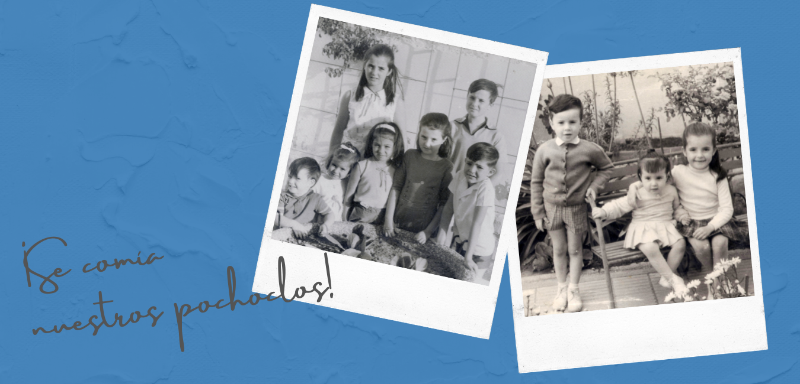

María Cecilia Perrín nació en Punta Alta, el 22 de febrero de 1957, hija de Angelita y Manolo Perrín. Fue la tercera de cinco hermanos: María Inés y Jorge, los mayores; Eduardo y Teresa, los menores. El ámbito familiar en el cual se desenvolvía la vida de Cecilia era de raíces profundas católicas.
Dice Susana “Conocí a Cecilia cuando ingresé al Jardín de Infantes de la Parroquia (que hoy se llama Instituto Estrada) a la edad de 4 años. La imagen que viene siempre a mi memoria es su sonrisa cuando repartía golosinas. Lo hacía incluso hasta quedar ella sin ninguna. Era algo tan extraño que yo le pedía a mi mamá que me comprara caramelos para Cecilia.
Tiempo después tuve que cambiar de Jardín y dejé de verla. Pero al comenzar primer grado, cierto día al volver a mi banco después de que corrigieran el cuaderno, alguien me tironeó del guardapolvo y sonriendo me dijo; ¿Te acordás de mí? Fue hermoso porque volví a encontrarme con mi primera amiga.” (fragmento del libro “Tus caminos son una locura” de Licy Miranda, Editorial Ciudad Nueva)
Había en el barrio un vecino ciego, un señor mayor. Cada vez que ella pasaba por su casa lo saludaba, hablaba un rato con él. Era afectuosa y conquistó su corazón hasta el punto que pedía que lo sacaran a la calle a la hora que ella solía pasar, al volver del colegio, para esperarla.
“Éramos bastante chicos y salíamos por Punta Alta con papá, mamá en el auto y nos sentábamos: Tere, Ceci en el medio y yo. Cuando salíamos, siempre nos compraban un paquetito de rosetas, que viene a ser el pochoclo. Entonces Ceci agarraba su paquete, vivaracha como era la flaca, y se lo comía rápido, entonces se tiraba para atrás en el auto y decía: ¡Me muero, me muero, me tienen que resucitar! Y nosotros le dábamos pochoclo… para levantarla… ¡Se comía nuestros pochoclos! pero estábamos contentos. Lo hacíamos como un servicio hacia ella, porque ella era para nosotros un servicio cada día, así que para nosotros era un placer hacerlo.” (testimonio de Eduardo, hermano menor)
A los doce años Cecilia perdió a su abuela materna. Durante el sepelio se colocó al lado de su madre y le decía: “No llores mamá. La abuelita está viva. Antes vivía con nosotros, ahora vive en el Cielo”.